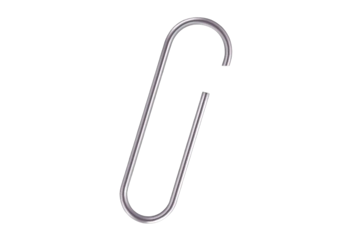
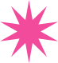
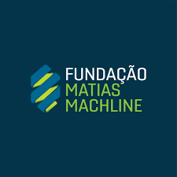
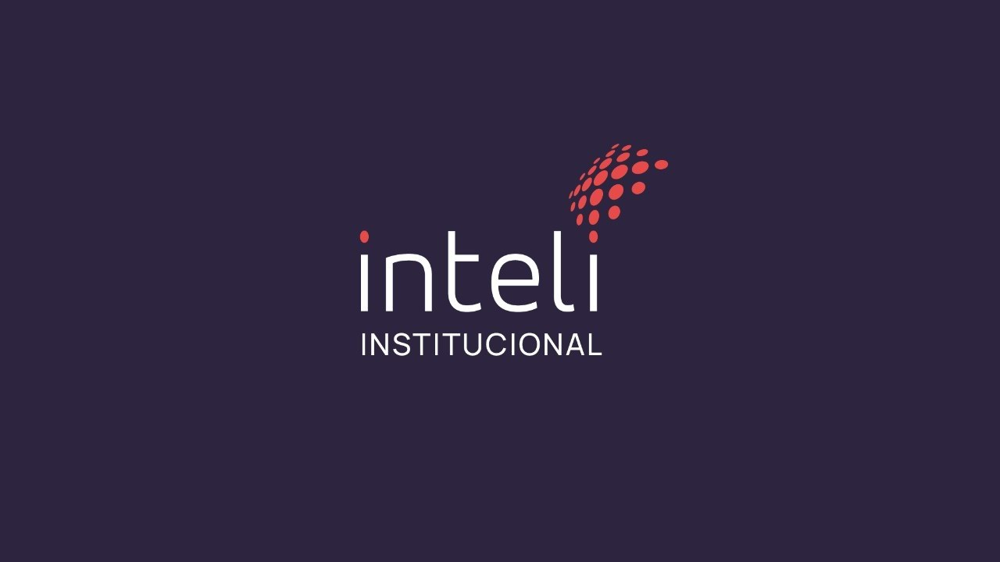
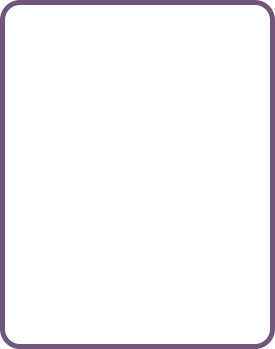
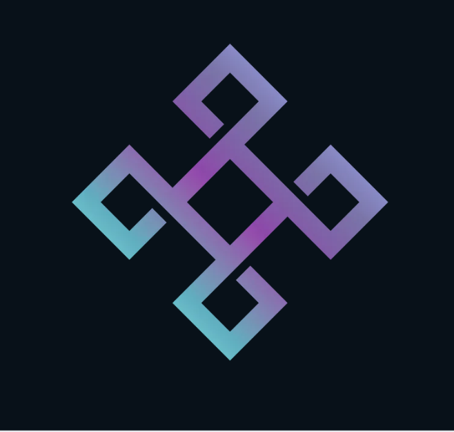
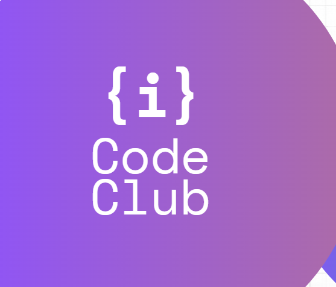
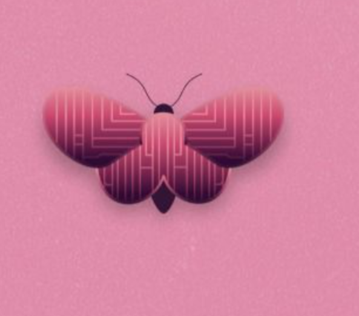

Do código
à interface.
Desenvolvimento web
- HTML
- CSS
- JavaScript
- TypeScript
Olá, eu sou a
Estudante de Engenharia de Software
e Técnica em Informática.

criatividade
Sou estudante de Engenharia de Software no Inteli e apaixonada por tecnologia, criatividade e inovação. Tenho interesse em desenvolvimento web, UX/UI e Inteligência Artificial.
Gosto de conectar diferentes áreas do conhecimento, unindo criatividade, comunicação, design e programação para transformar ideias em projetos que gerem valor para as pessoas e para a sociedade.
Um pouco do que eu uso
para tirar ideias do papel.
Desenvolvimento web
Dados & back-end
Interesse em UX/UI
Criatividade e design para conectar pessoas e tecnologia.
Tecnologia & inovação
Curiosidade por Inteligência Artificial e diferentes áreas do conhecimento.
Projetos, aprendizados e conexões.
Cada pasta conta um pedaço
da história.
Máquina semi-automatizada para a produção de azulejos à base de fibra de coco.
Um jogo para conscientizar sobre a importância da adoção de animais.
Cadastro e monitoramento de famílias em áreas de risco para apoiar a Defesa Civil de Santo André.
Uma plataforma que conecta capacitação, trabalho digital e pagamentos para mulheres em vulnerabilidade econômica.

Técnico em Informática
Fundação Matias Machline
Engenharia de Software
Inteli

Membro

Incentiva o aprendizado em tecnologia e programação de jovens.

Apoio e fortalecimento da participação feminina na comunidade tech.